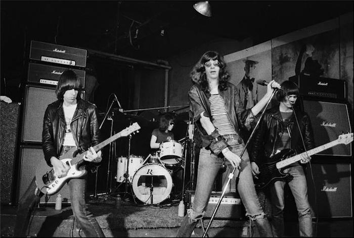
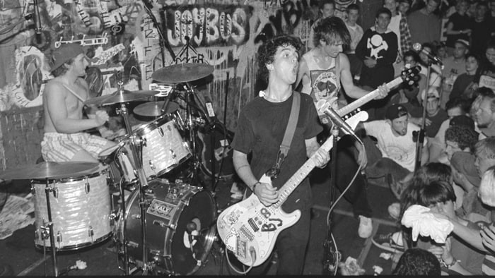
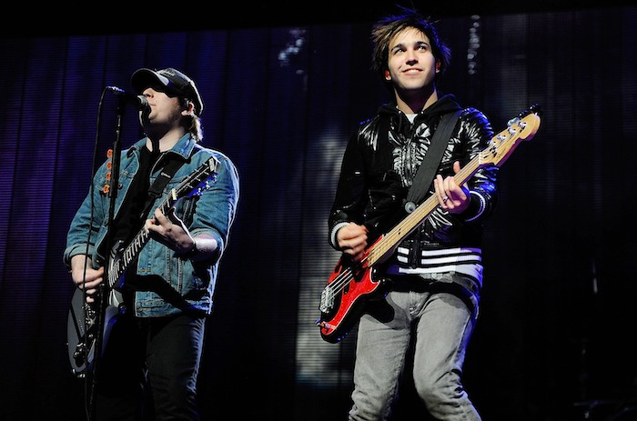
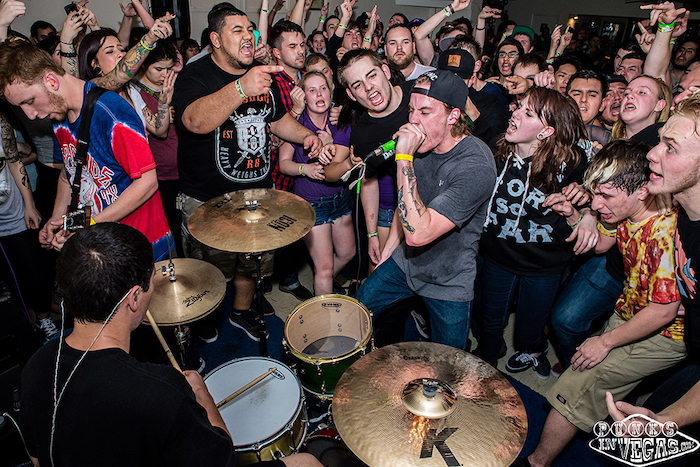
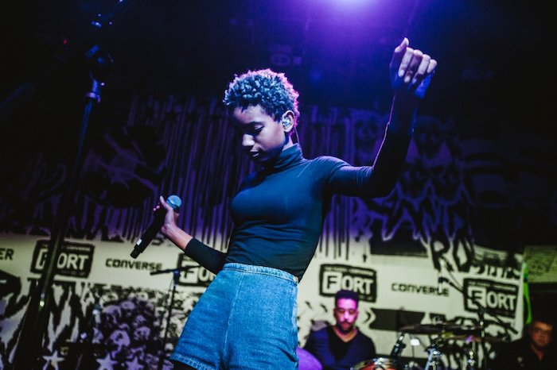

According to Wikipedia, pop punk is "a rock music genre that combines the textures and fast tempos of punk rock with the melodies and chord progressions of power pop and pop music." Over the years, pop punk's mainstream success has fluctuated, with a recent resurgence that some attribute to the social media platform TikTok. Below, you can find the major eras of the genre as well as some key artists for each.
Origins: 1970s-1980s
From Wikipedia: "[Jason] Heller said that the Ramones crafted a blueprint for pop-punk with their 1976 debut album, but 1978 was the year that the genre "came into its own". He noted that some bands "were unmistakably pop-punk bands by today's definition of the term, but in 1978, the distinction wasn't so clear. Plenty of punk groups of the era threw a token pop tune or two into their set—sometimes for ironic effect, other times earnestly." Heller also acknowledged that many "burgeoning pop-punk groups in 1978 bordered on power-pop, a parallel genre on the rise at the time. But power-pop began earlier, and it was a more American phenomenon"."
Rise to Mainstream: 1994-2004
From Wikipedia: "In August 1992, early 1990s California punk rock and pop punk was noticed by the magazine Spin when the magazine published a story called "California Screamin' ", which is about the early 1990s underground punk rock scene in California, mentioning pop punk bands like Screeching Weasel and Green Day. In 1993, California's Green Day and Bad Religion were both signed to major labels, and by 1994, pop punk was quickly growing in mainstream popularity. Many punk rock and pop punk bands originated from the California punk scene of the late 1980s, and several of those bands, especially Green Day and the Offspring, helped revive interest in punk rock in the 1990s."
Emo Pop and Neon Pop-Punk: 2005-2009
From Wikipedia: "According to Brooklyn Vegan's Andrew Sacher, after the success of "hugely popular" 2000s bands such as Fall Out Boy, Paramore, and My Chemical Romance, "the line between pop punk and emo look[ed] close to nonexistent." Several pop-punk bands took different directions in the late 2000s, with Panic! at the Disco crafting the Beatles-inspired, baroque-styled record Pretty. Odd. (2008) and Fall Out Boy experimenting with glam rock, blues rock and R&B on Folie a Deux (2008), both of which created fan confusion and backlash. ... The late-2000s also saw the pioneering of neon pop-punk, a style of pop punk that embraced more elements of pop and electronic music than was traditional in the genre. Popular groups in the style at the time included All Time Low, the Maine, the Cab, Metro Station, Boys Like Girls, Cobra Starship and Forever the Sickest Kids."
Maturation and Decline in Popularity: 2010s
From Wikipedia: "Pop punk lost its mainstream popularity in the early 2010s, with rock bands and guitars becoming rare on dance-focused pop radio. Some acts, such as New Found Glory, have seen concert attendance numbers decrease steadily. Devon Maloney of MTV wrote that "Pop punk and emo bands don't headline Coachella or Bonnaroo; they rarely, if ever, are even billed on mainstream festival stages," and notes that it has similarly disappeared from the press. The only magazines that feature pop punk bands are niche publications like Alternative Press and the occasional teen magazine, while influential pop punk magazine AMP ceased publication in 2013. The decline in mainstream popularity for the genre, coupled with the closure of many mid-size venues associated with it, has resulted in many venues and labels returning to the DIY ethic that first spawned the punk movement. ... In the early 2010s, a new wave of pop punk groups emerged, fronted by the Wonder Years, State Champs, Neck Deep, Real Friends and Knuckle Puck. Dave Beech of Clash noted that these groups were "[d]arker and more mature" than those previously, taking influence "and occasional indifference" from 1990s emo, music commentator Finn McKenty also cited the influence from hardcore punk as being prominent during this period."
Mainstream Resurgence: 2020s
From Wikipedia: "An article by Kerrang! credited Machine Gun Kelly as well as Yungblud as bringing the genre back to mainstream attention. In addition to this, the publication cited the app TikTok as one of the key factors, as videos tagged #poppunk had received 400 million views by January 21st 2021. On the app, viral trends took place using tracks from pop punk bands like All Time Low, Simple Plan and Paramore. Some popular TikTok content creators even began releasing music in the genre around this time. ... During this period a number of other mainstream acts began experimenting with the genre such as Olivia Rodrigo, Maggie Lindemann, Trippie Redd, Tyler Posey, Chloe Moriondo and Willow Smith."